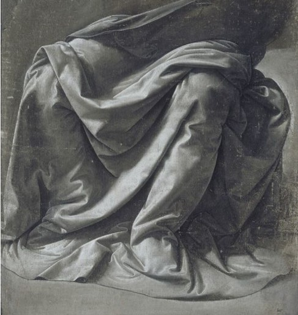

Leonardo did not just paint light and shadow. He tried to figure out exactly what they were, the same way he questioned everything else. Here is how he defined them:
In his own words
Shadow is the absence of light, merely the obstruction of the luminous rays by an opaque body. Shadow is of the nature of darkness. Light [on an object] is of the nature of a luminous body; one conceals and the other reveals. They are always associated and inseparable from all objects. But shadow is a more powerful agent than light, for it can impede and entirely deprive bodies of their light, while light can never entirely expel shadow from a body, that is from an opaque body.
Look at the last sentence. Light cannot get rid of shadow completely, but shadow can wipe out light. Leonardo thinks shadow wins. Here is the line that matters most for painters:
In his own words
Shadow is the means by which bodies display their form. The forms of bodies could not be understood in detail but for shadow.
Without shadow, you cannot see a shape's form at all, just a flat outline. This is exactly what Leonardo practiced, over and over, in drawings like this one:

Look closely: there is no outline anywhere. Every fold of cloth is built entirely out of gradations: brightest highlight, a little darker, darker still, all the way down to almost black. He made many of these fabric studies to train his hand and his eye to turn light and dark into solid, rounded form.
In his own words
Objects seen between light and shadow will show the most relief.
"Relief" means looking three-dimensional, like it could pop off the page. And that zone between the brightest light and the darkest shadow is where soft, careful shading matters most. He had a rule for it:
In his own words
When you represent in your work shadows which you can only discern with difficulty, and of which you cannot distinguish the edges so that you apprehend them confusedly, you must not make them sharp or definite lest your work should have a wooden effect.
In other words: when a shadow's edge is hard to see, do not draw it as a sharp line. Soft, blurry edges look real there. A hard edge can look like a wooden cutout instead of a living face. Painters later gave this technique a name, sfumato, from the Italian word for "smoky." Keep that rule in mind. It is about to explain one of the most famous paintings in the world.
Words to know
- opaque
- not letting light through, like a wall
- relief
- the look of standing out in 3D from a flat surface
- gradation
- a smooth change from light to dark
Try it
Optional. For after your session with Rocky, on your own time. Ask a grown-up before you use any website.
- Shadow lab: put a ball on white paper, shine one lamp on it, and draw it with no outline at all, using only light and dark. Try making one edge soft and one sharp. Which looks more real?
- Museum of Science, Boston: Linear Perspective. Watch an object look smaller as it moves away, and measure how much.